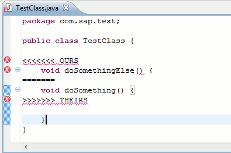
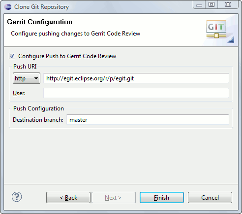
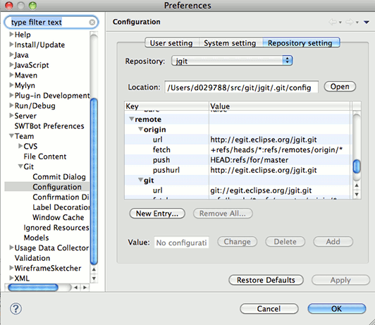
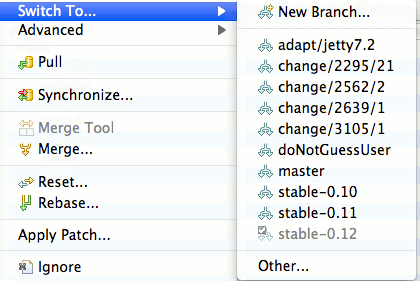
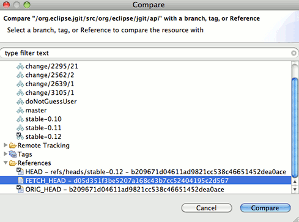
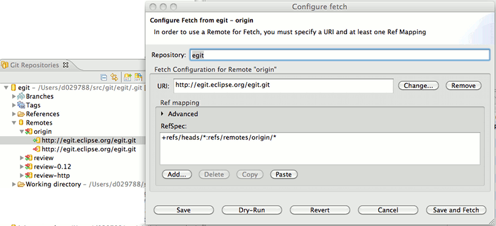
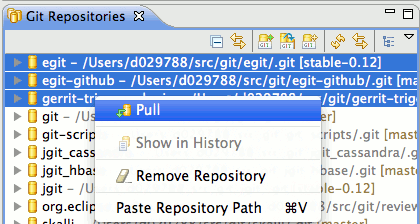

| EGit 0.12 New and Noteworthy | ||
|---|---|---|
|
|
||
| Performance Improvements | ||
Cherry-pick now properly supports conflict handling.

A new wizard page simplifies push configuration for code review and automatically configures adding a Gerrit Change-Id: footer to commits if you are cloning a repository from Gerrit Code Review.

There is a new preference to automatically add your Signed-off-by: footer to all your commits.
You may now edit the repository configuration from a new preference page.

In the Synchronize View date format and change set labels are now configurable.


The simplified fetch and push wizard pages are now also used for remote configuration in the Repositories View.

You may now run the pull action simultaneously for multiple selected repositories.

|
|
||
| Performance Improvements |